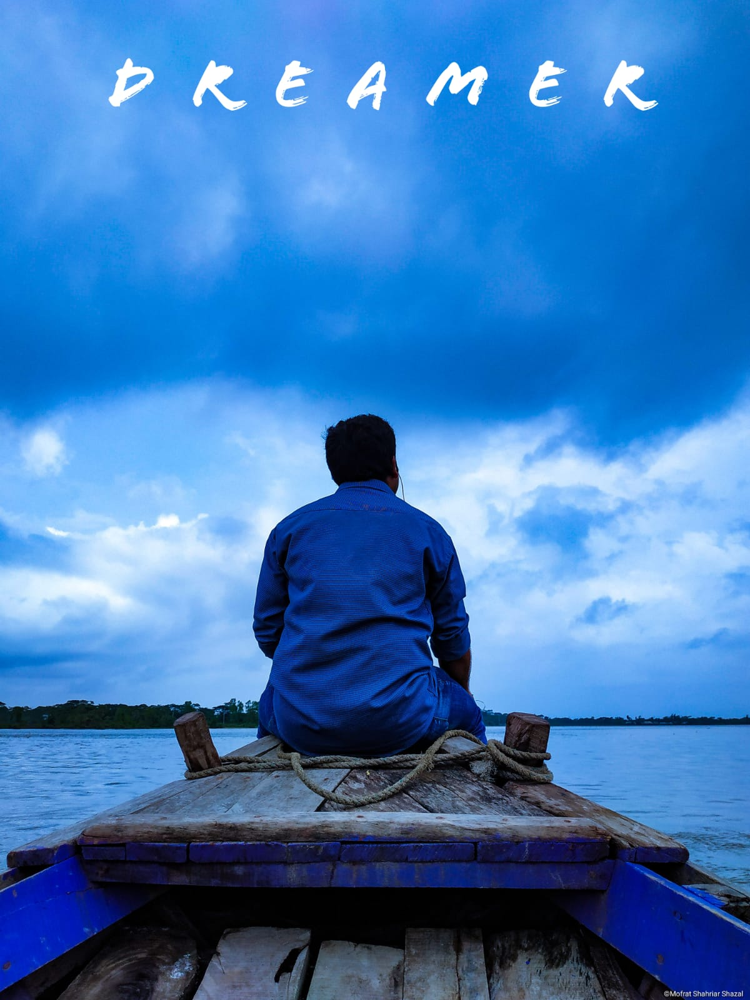
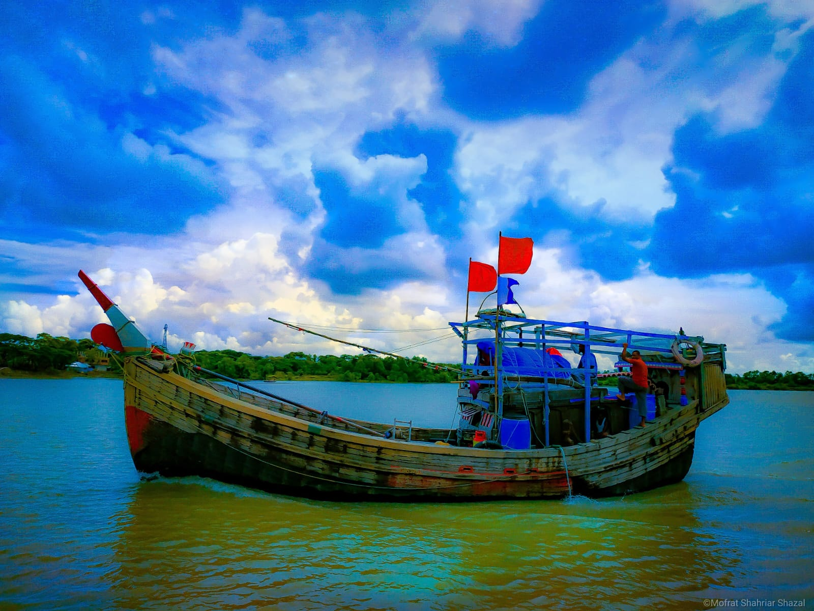
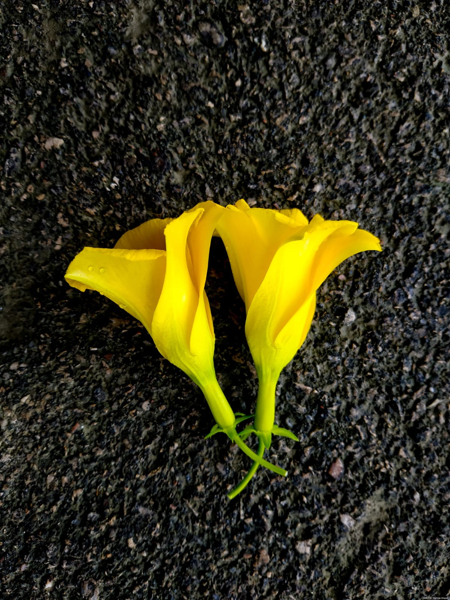
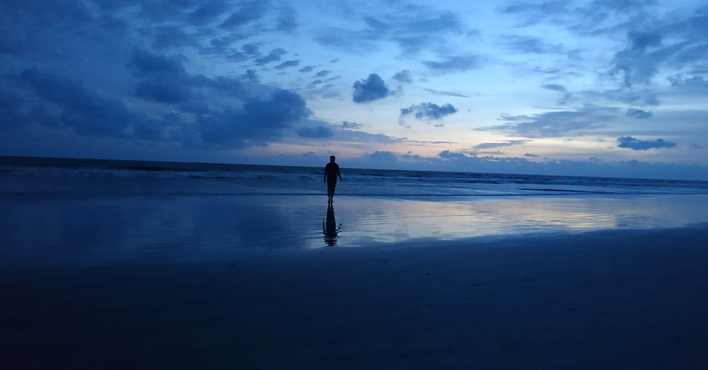
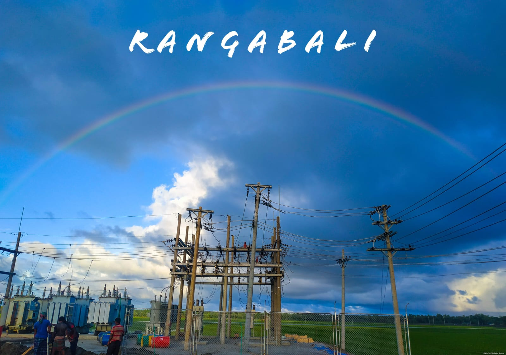
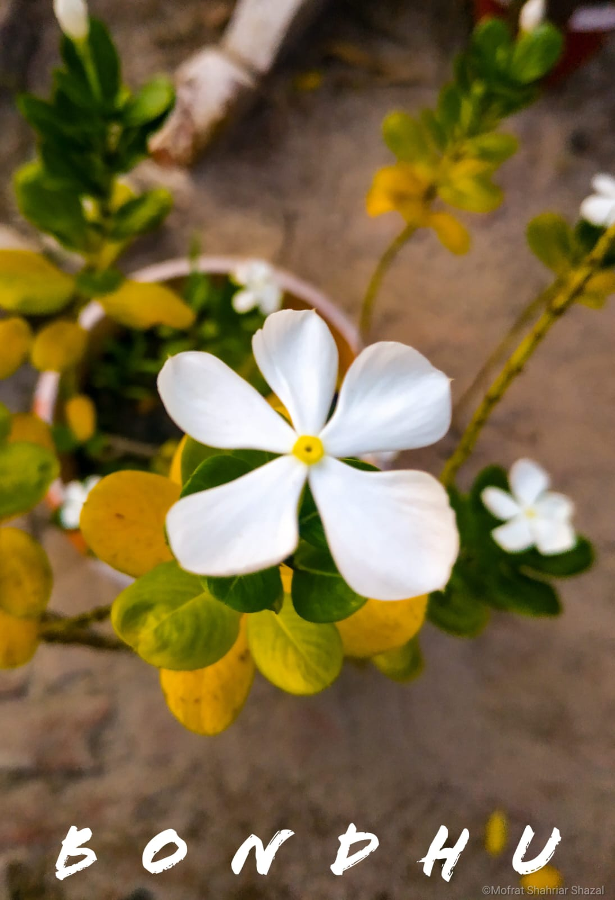

Selected Works
A curated selection from Bangladesh and beyond — landscapes, blooms, and quiet moments.





Years Shooting
Photos in Portfolio
Genres Explored
Passion Driven
"A photograph is a secret about a secret.— Diane Arbus
The more it tells you, the less you know."
About the Photographer
Based in Bangladesh, I'm a passionate self-taught photographer drawn to the quiet beauty hiding in plain sight — the arc of a rainbow over a power station, a yellow flower resting on dark asphalt, a silhouette standing at the edge of an infinite sea.
My lens explores landscapes, blooms, wildlife, food, and the faces and places of everyday life. Every photograph is a small act of attention — a way of saying: this moment mattered.